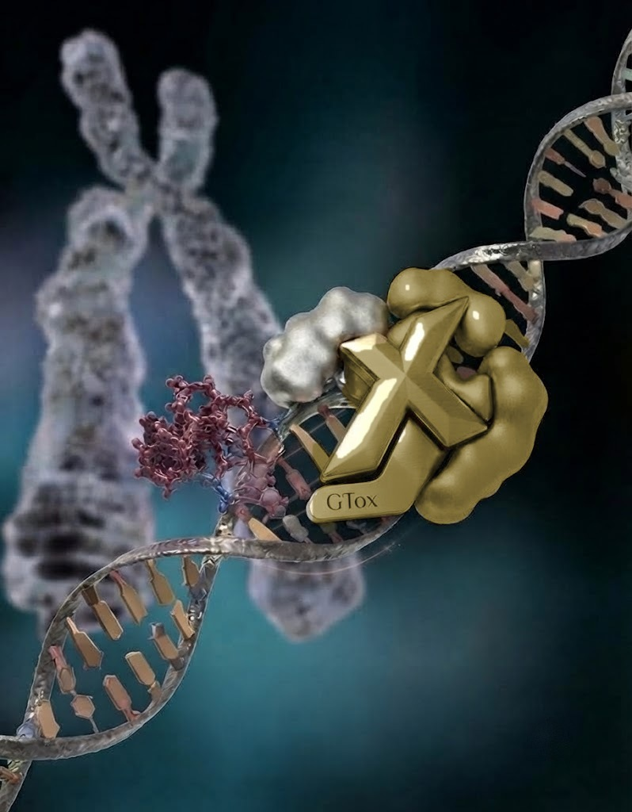
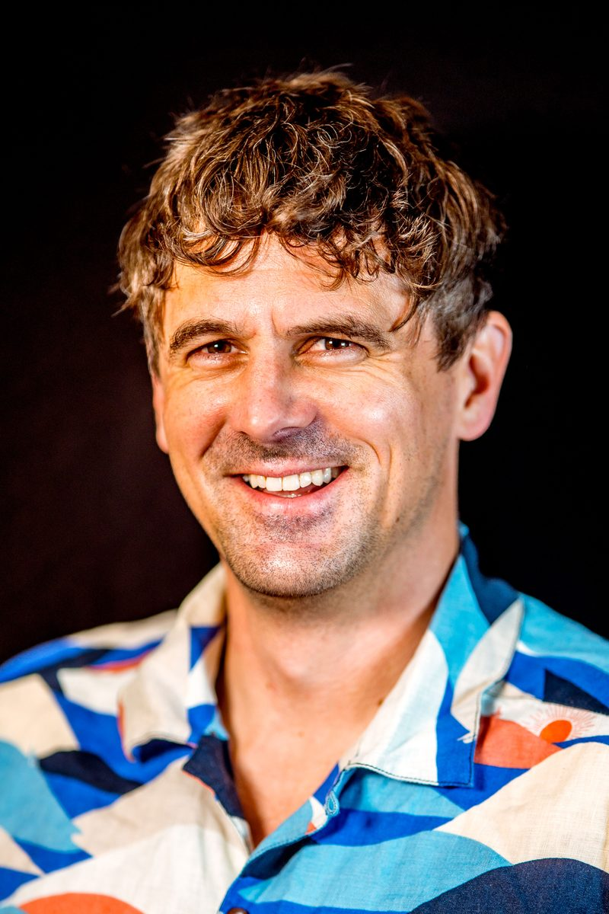

Turning complex genetic toxicology data into conclusions you can defend.
GTox Ltd advises on dose–response analysis, hazard and risk assessment, and interpretation of the standard genotoxicity battery — backed by a deep, applied understanding of both established and emerging assay methodologies.

Led by one of the field's leading voices in quantitative genetic toxicology.
GTox Ltd is directed by Dr George Johnson, an Honorary Associate Professor in Genetics at Swansea University and a genetic toxicology consultant to more than 30 pharmaceutical companies, alongside the food, flavour, fragrance, consumer products, petrochemical and agrochemical industries — with analyses contributing directly to regulatory submissions in each.
His work centres on quantitative genetic toxicology: benchmark dose (BMD) analysis, pairwise and trend testing, and TD50 calculations, together with risk assessment approaches including PDE, AI, TDI and MOE. He provides study design and advanced data analysis across the standard genetic toxicology battery, in vivo follow-up assays (including OECD TG 488 and 489) and newer New Approach Methodologies (NAMs), is developing expertise in the cancer bioassay, and has served as an expert witness in major litigation involving nitrosamine impurities.
- Director
- Dr George Johnson, Honorary Associate Professor
- Pharma clients
- 30+ companies to date
- Other industries
- Food, fragrance, consumer products, petrochemical, agrochemical
- Countries
- USA, Canada, UK, Switzerland, France, Belgium, Germany, Spain, Israel, Japan
- Regulatory bodies
- US-FDA, EPA, EFSA, Swiss-Medic, EMA
- Recognition
- Ex-President EEMGS · BRT/ERT · FHEA
- Based
- Swansea, UK
Two decades of applied genetic toxicology consultancy, at global scale.
Consultancy built around the genetic toxicology battery — and what comes after it.
Dose–response analysis
Quantitative modelling of dose–response relationships, benchmark dose (BMD) derivation, and point-of-departure selection to support hazard characterisation.
Hazard & risk assessment
Integration of genotoxicity data into hazard identification and risk assessment frameworks, tailored to the regulatory context you're working in.
Standard genetic toxicology battery review
Expert interpretation of bacterial reverse mutation (OECD TG 471), in vitro chromosomal damage (TG 473, 487) and in vivo micronucleus (TG 474) data, including equivocal and conflicting results.
Applied new methodologies
Evaluation and application of newer assay platforms and New Approach Methodologies (NAMs), and how they fit alongside the established battery — including in vivo error-corrected sequencing (ECS) mutation, transgenic rodent gene mutation (TG 488) and the comet assay (TG 489).
A straightforward process, from first data to final position.
Scope the question
A short conversation to understand the data you have, the regulatory question you're answering, and the timeline you're working to.
Review the data
Detailed review of study data and existing reports, including any dose–response or weight-of-evidence work already completed.
Analyse & assess
Dose–response modelling, hazard characterisation, and risk assessment carried out against current OECD test guidelines (TG 471, 473, 474, 487, 488, 489, 490) and regulatory guidance.
Report & discuss
A clear, defensible written position — with a follow-up discussion to work through any questions before it goes further.
Trusted by the regulatory bodies setting the standards.
HESI GTTC — Genetic Toxicology Technical Committee
Co-chair of the quantitative subgroup; current focus on the in vivo follow-up group for nitrosamines, contributing to Jolly et al., 2026.
ICH M7 nitrosamine addendum group
Invited speaker (2025) on in vivo mutation to cancer potency assessment — work now supporting the mutation BMDL-to-AI calculation approach.
EMA expert workgroup
Invited expert, with opinion included in previous EMA nitrosamine guidance, and a contributing expert to the EMA-funded Mutamind project.
NITWIG
Invited by the global regulatory nitrosamines expert body to train members on benchmark dose methodology, followed by a dedicated Q&A session.
Committee on Mutagenicity (COM), Department of Health
Expert member, 2021–ongoing.
IWGT — International Workshops on Genotoxicity Testing
Co-chair, 2026 (previously chaired the quantitative expert group in 2013 and 2017).
Expert witness, nitrosamine litigation
Sartan drugs (NDMA/NDEA) cases — Greenberg Traurig, US (ongoing); Osler, Canada (case won).
Medicines for Europe
Commissioned to author a report on the use of genetic toxicology data in the risk assessment of nitrosamine impurities.

A little more about George.
When he's not deep in a dose–response dataset, George is usually somewhere near the water — surfing is his way of switching off between conferences and case work.

Have a dataset, a deadline, or a question about your genetic toxicology package?
Send a message using the form and it'll come straight through — no inbox address published here for bots to find.